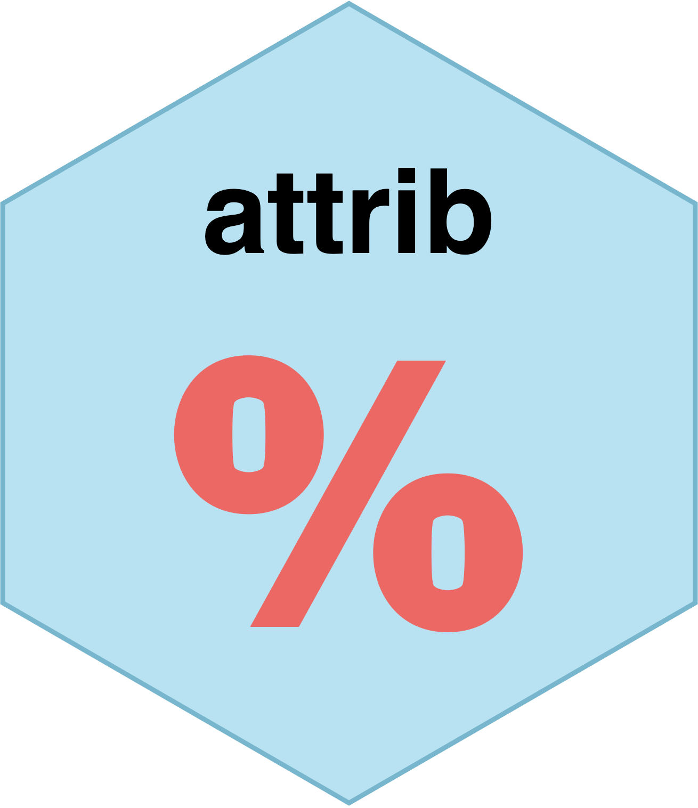
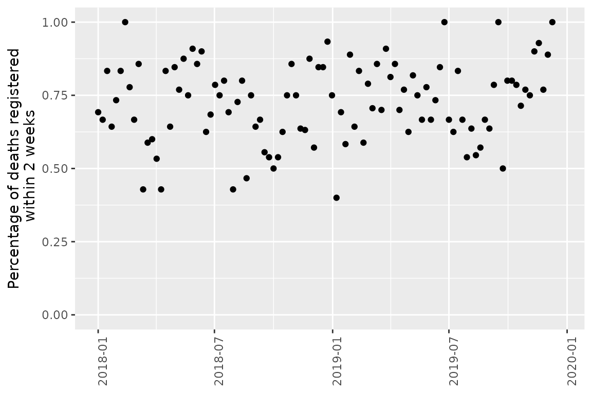
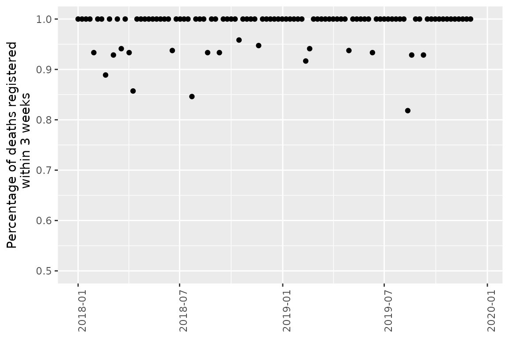
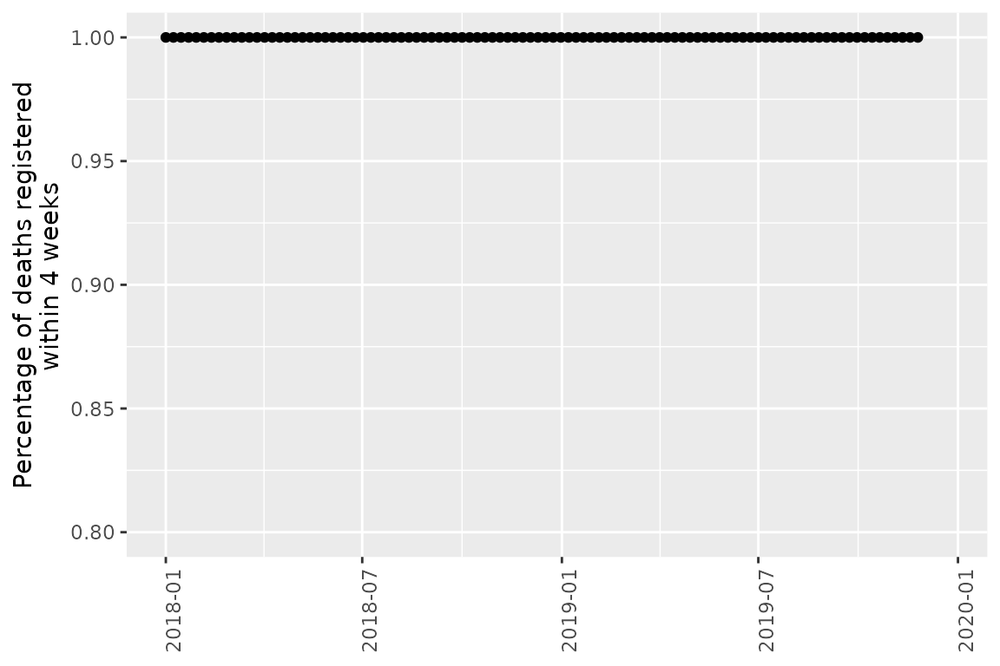
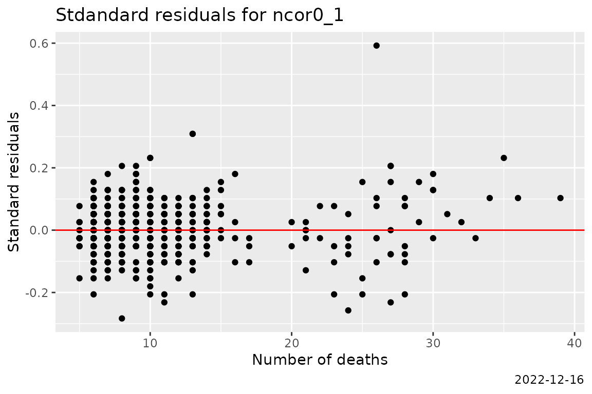
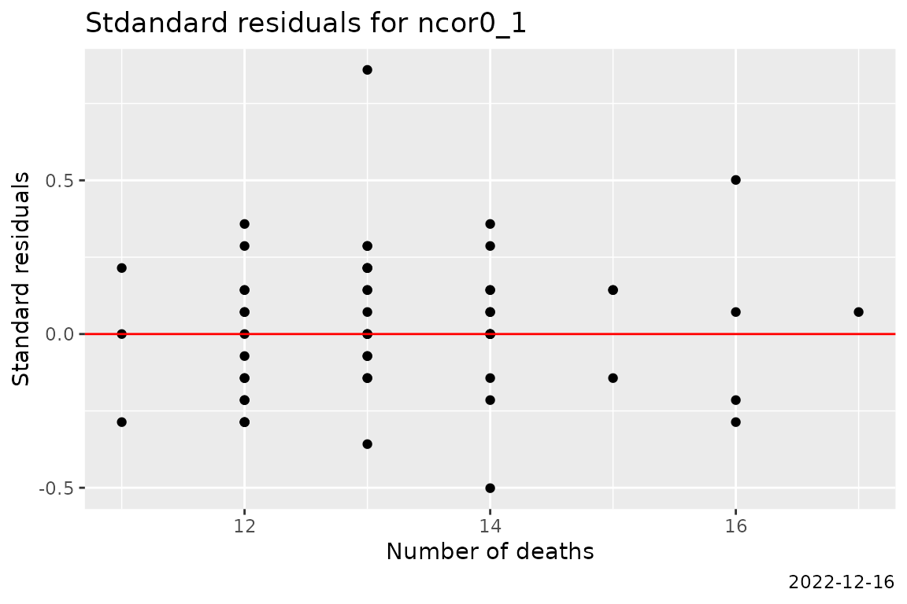
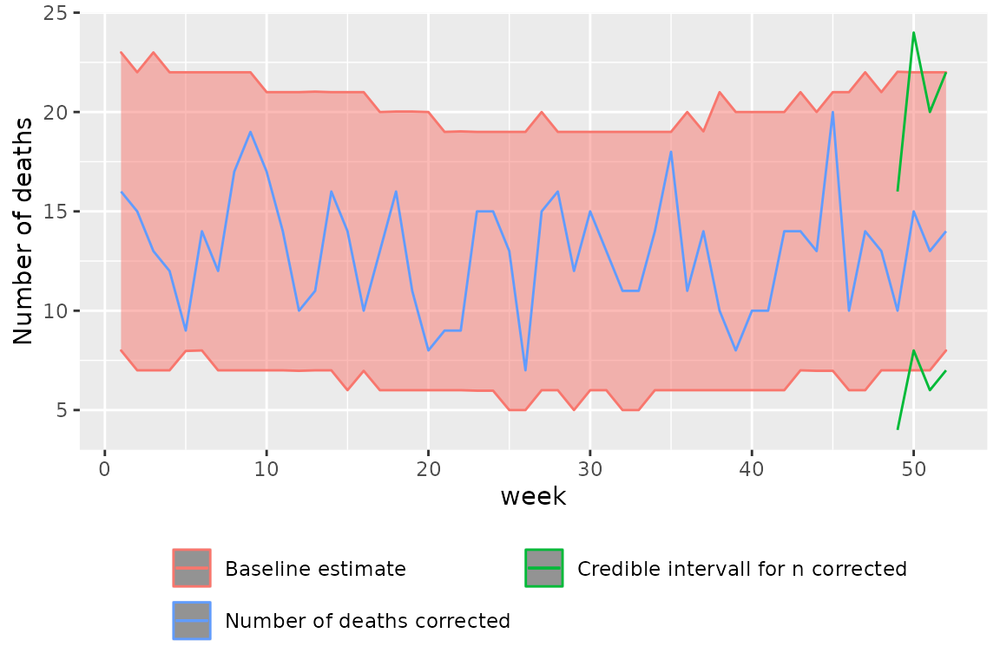
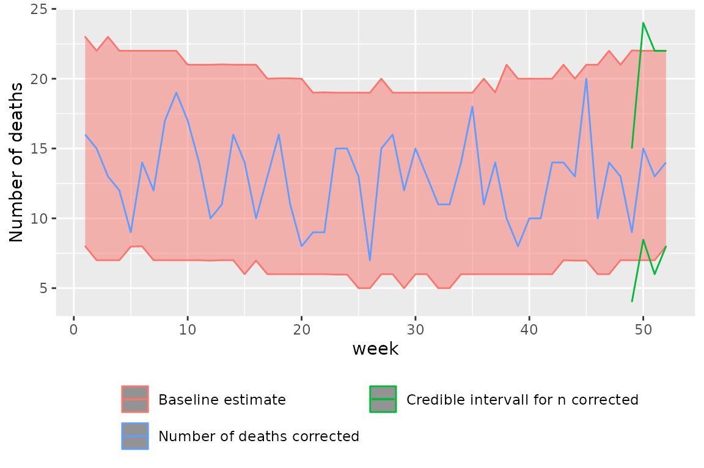
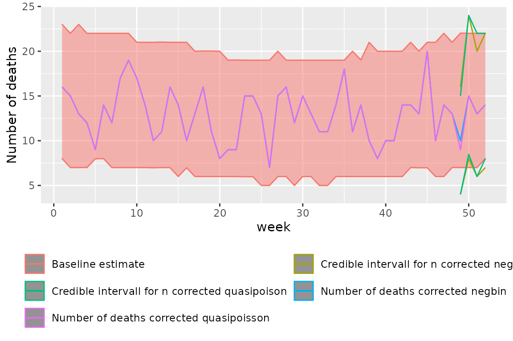

Nowcasting with Attrib
Aurora Christine Hofman
2021-05-15
Source:../vignettes/nowcast.Rmd
nowcast.RmdThe nowcasting functions in attrib are made to correct
for delay in registration. This vignette will go through how to use:
-
nowcast_aggregateto change registration data to aggregated weekly data, -
nowcastto correct for the delay in registration, -
nowcast_evalto evaluate the estimates made bynowcast, -
baseline_estto compare the estimate made by nowcast to what is expected.
To do so we will use the delay in mortality registration in Norway as
a example. All the data used in this example are fake data. We will show
two examples of how to use nowcast one using a linear mixed
model where the data is assumed to be negative binomial and one using a
geneal linear model where the data is assumed to be quasipoisson.
Before we start it is important to note that all nowcasting functions
only work with full weeks where the weeks start on mondays. The function
cut is used to ensure this.
Aggregating registration data using
nowcast_aggregate.
For this example some fake mortality data has been generated.
mortality_data_raw <- attrib::data_fake_nowcasting_county_raw
head(mortality_data_raw)
#> doe dor location_code
#> 1: 2018-01-01 2018-01-22 county_nor03
#> 2: 2018-01-01 2018-01-19 county_nor03
#> 3: 2018-01-01 2018-01-19 county_nor03
#> 4: 2018-01-01 2018-01-18 county_nor03
#> 5: 2018-01-01 2018-01-17 county_nor03
#> 6: 2018-01-01 2018-01-27 county_nor03
tail(mortality_data_raw)
#> doe dor location_code
#> 1: 2019-12-30 2020-01-15 county_nor54
#> 2: 2019-12-30 2020-01-13 county_nor54
#> 3: 2019-12-30 2020-02-01 county_nor54
#> 4: 2019-12-30 2020-01-13 county_nor54
#> 5: 2019-12-30 2020-01-26 county_nor54
#> 6: 2019-12-30 2020-01-26 county_nor54As we can see this data set contains date of event “doe”, date of
registration “dor” and “location_code”. To use
nowcast_aggregate these columns must exist to be used as
the first argument of nowcast_aggregate. The function also
takes in the aggregation date, “aggregation_date”, the first date after
the dataset has ended. We recall that even if the aggregation date is
set to a Tuesday nowcast will convert this into a monday ensuring all
weeks are compleate. In addition the number of weeks, “n_week”, for
which we want to calculate the percentage of total registrations and the
total number of registered events obtained for each week is an argument.
The final argument is the population data, “pop_data”, a data set
containing the population for each location code in the original data.
This variable can be set to NULL.
aggregation_date <- as.Date("2020-01-01")
n_week <- 6
unique_locations <- csdata::nor_locations_names()[granularity_geo=="county"]$location_code
pop_data<- csdata::nor_population_by_age_cats()[
location_code %in% unique_locations,
.(
location_code,
year = calyear,
pop = pop_jan1_n
)
]
mortality_data_aggregated <- attrib::nowcast_aggregate(
mortality_data_raw,
aggregation_date = aggregation_date,
n_week = n_week,
pop_data = pop_data
)
tail(mortality_data_aggregated[location_code == "county_nor03"])
#> cut_doe location_code n_death n0_0 p0_0 n0_1 p0_1 n0_2 p0_2
#> 1: 2019-11-18 county_nor03 14 0 0 3 0.2142857 13 0.9285714
#> 2: 2019-11-25 county_nor03 13 0 0 0 0.0000000 10 0.7692308
#> 3: 2019-12-02 county_nor03 9 0 0 5 0.5555556 8 0.8888889
#> 4: 2019-12-09 county_nor03 12 0 0 2 0.1666667 12 1.0000000
#> 5: 2019-12-16 county_nor03 1 0 0 1 1.0000000 NA NA
#> 6: 2019-12-23 county_nor03 0 0 NA NA NA NA NA
#> n0_3 p0_3 n0_4 p0_4 n0_5 p0_5 week year pop
#> 1: 14 1 14 1 14 1 47 2019 681071
#> 2: 13 1 13 1 NA NA 48 2019 681071
#> 3: 9 1 NA NA NA NA 49 2019 681071
#> 4: NA NA NA NA NA NA 50 2019 681071
#> 5: NA NA NA NA NA NA 51 2019 681071
#> 6: NA NA NA NA NA NA 52 2019 681071As we can see we have now generated a data table containing the number of registered deaths per week for all weeks and locations between the first date in the dataset and the week before the aggregation date. The data table contains the variables “cut_doe”, the date of the Monday belonging to each week, “p0_i” the percentage of registered deaths and “n0_i” the number of deaths registered within all weeks up to “n_week”. The population, “pop”, “year” and “week” are also added to the data.
It is worth noting that “n0_0” is defined as the number of moralities registered in the last full week before “cut_doe” which is always a Monday. This means that “n0_0” also contains information from a full week. The information contained in “n0_1” are all moralities registered within the last and the second last week. Hence this contains the moralities registered withing 2 weeks from the “cut_doe”.
We also note that for the last weeks in the data set we do not have information about what happens in the future, hence these are set to “NA”.
We can now plot the percentages of registrations after \(k\) weeks and use this to evaluate how many weeks we need to correct.
q <- ggplot(data = mortality_data_aggregated[location_code == "county_nor03"], aes(x = cut_doe, y = p0_2))
q <- q + geom_point()
q <- q + scale_y_continuous("Percentage of deaths registered\n within 2 weeks", limits = c(0,1))
q <- q + theme(axis.title.x=element_blank(), axis.text.x = element_text(angle=90))
q
q <- ggplot(data = mortality_data_aggregated[location_code == "county_nor03"], aes(x = cut_doe, y = p0_3))
q <- q + geom_point()
q <- q + scale_y_continuous("Percentage of deaths registered\n within 3 weeks", limits = c(0.5,1))
q <- q + theme(axis.title.x=element_blank(), axis.text.x = element_text(angle=90))
q
q <- ggplot(data = mortality_data_aggregated[location_code == "county_nor03"], aes(x = cut_doe, y = p0_4))
q <- q + geom_point()
q <- q + scale_y_continuous("Percentage of deaths registered\n within 4 weeks", limits = c(0.8,1))
q <- q + theme(axis.title.x=element_blank(), axis.text.x = element_text(angle=90))
q
We can see that for this fake dataset we have around \(80 \%\) of the registrations after 3 weeks and a $100 % $ after 5 weeks.
Using nowcast to correct n_deaths assuming data to be
negative binomial.
When we have a data frame either generated by
nowcast_aggregate, or on the same form as shown above, we
can use nowcast to correct for the delay in registration.
We set how many week we want to adjust. If “n_week_adjust” = 5 then the
current week and the prior 4 weeks are corrected. Meaning 5 weeks in
total. We also set how many weeks we want to train the model on. Note
that we assume all the weeks before the weeks we state to be adjusted to
be the true data. In other words we assume 100 % of the deaths to be
present. If in doubt set “n_week_adjust” a bit higher.
In our case as seen from the plots after 5 weeks almost 100 % of the data are registered and we therefor chose to correct only 5 weeks.
We use the default functions for “nowcast_correction_fn” and
nowcast_correction_fn_negbin_mm, however these can be
manually set as long as they full fill certain conditions. The function
must have the following arguments:
- data, a dataset generated by
nowcast_aggregateor on the same form - n_week_adjusting, the number of weeks to be adjustd
- offset
- date_0, the last date in the dataset. The function must return a vector containing the following:
- data, the corrected data set containing the columns ncor, ncor0_1 up to ncor0_n_week_adjusting
- n_week_adjusting number of weeks that where adjusted
- fit <- a vector containgin a fit for each correction, (one per week in n_week_adjusting).
We also use the default simulation function
nowcast_correction_sim_neg_bin. This can also be set
manually but must contain the following arguments:
- nowcast_correction_object made by “nowcast_correction_fn”
- offset,
- n_sim, number of simulations
- date_0, the last date in the data set.
It must return the following a dataset containing the following rows:
- yrwk, yearweek
- n_death, number of observed deaths
- sim_value, predicted number of deaths from one simulation
- cut_doe, first date of every week
- week
- year
- location_code
- sim_id, simmulation id
It is also important to make sure that the simulation function works together with the chosen correction function.
data_aggregated <- mortality_data_aggregated
n_week_training <- 50
n_week_adjusting <- 4
date_0 <- aggregation_date
nowcast_correction_fn<- nowcast_correction_fn_negbin_mm
nowcast_correction_sim_fn = nowcast_correction_sim_neg_bin
offset = "log(pop)"
nowcast_object_negbin <- attrib::nowcast(data_aggregated,
offset,
n_week_adjusting,
n_week_training,
date_0,
nowcast_correction_fn = nowcast_correction_fn_negbin_mm,
nowcast_correction_sim_fn = nowcast_correction_sim_neg_bin
)nowcast returns two datasets. One being the original
dataset with the median of the corrected data added and the other
containing simulations for the predicted value of ncor so one can make
credible intervals.
tail(nowcast_object_negbin$data[location_code == "county_nor03"])
#> yrwk location_code n_death ncor cut_doe n0_0 p0_0 n0_1 p0_1 n0_2
#> 1: 2019-47 county_nor03 14 14 2019-11-18 0 0 3 0.2142857 13
#> 2: 2019-48 county_nor03 13 13 2019-11-25 0 0 0 0.0000000 10
#> 3: 2019-49 county_nor03 9 10 2019-12-02 0 0 5 0.5555556 8
#> 4: 2019-50 county_nor03 12 15 2019-12-09 0 0 2 0.1666667 12
#> 5: 2019-51 county_nor03 1 13 2019-12-16 0 0 1 1.0000000 NA
#> 6: 2019-52 county_nor03 0 14 2019-12-23 0 NA NA NA NA
#> p0_2 n0_3 p0_3 n0_4 p0_4 n0_5 p0_5 week year pop n0_0_lag1 n0_1_lag1
#> 1: 0.9285714 14 1 14 1 14 1 47 2019 681071 0 2
#> 2: 0.7692308 13 1 13 1 NA NA 48 2019 681071 0 3
#> 3: 0.8888889 9 1 NA NA NA NA 49 2019 681071 0 0
#> 4: 1.0000000 NA NA NA NA NA NA 50 2019 681071 0 5
#> 5: NA NA NA NA NA NA NA 51 2019 681071 0 2
#> 6: NA NA NA NA NA NA NA 52 2019 681071 0 1
#> n0_2_lag1 n0_3_lag1 ncor0_0 ncor0_1 ncor0_2 ncor0_3
#> 1: 9 10 13 14 16 14
#> 2: 13 14 13 12 13 13
#> 3: 10 13 14 16 11 10
#> 4: 8 9 14 13 15 NA
#> 5: 12 NA 14 13 NA NA
#> 6: NA NA 14 NA NA NA
head(nowcast_object_negbin$data_sim)
#> yrwk n_death sim_value cut_doe week year location_code sim_id
#> 1: 2019-49 3 3 2019-12-02 49 2019 county_nor15 1
#> 2: 2019-49 3 3 2019-12-02 49 2019 county_nor15 2
#> 3: 2019-49 3 3 2019-12-02 49 2019 county_nor15 3
#> 4: 2019-49 3 3 2019-12-02 49 2019 county_nor15 4
#> 5: 2019-49 3 4 2019-12-02 49 2019 county_nor15 5
#> 6: 2019-49 3 1 2019-12-02 49 2019 county_nor15 6Evaluating the nowcast negative binomial
estimates.
To evaluate the estimates made by nowcast an evaluation
function is made. The function takes a “nowcast_object” and the number
of weeks to adjust “n_week_adjusting” as arguments.
nowcast_eval_object_negbin <- attrib::nowcast_eval(nowcast_object_negbin, n_week_adjusting)We can evaluate all the residual plots to make sure there is no bias. Here we see the residualplot for n corrected in week 2.
nowcast_eval_object_negbin[[2]]$std_residualplot
If the resuduals do not show any bias we look at the accuratcy of the predictions using the absolute error (“abs_error”), \(R^2\) (“R_squared”), mean square error (“MSE”), and the root mean square error (“RMSE”).
model_data_negbin <- data.table::data.table(
ncor = 0:(n_week_adjusting-1)
)
for (i in 0:(n_week_adjusting-1)){
model_data_negbin[i+1, abs_error := nowcast_eval_object_negbin[[i+1]]$abs_error]
model_data_negbin[i+1, R_squared := nowcast_eval_object_negbin[[i+1]]$R_squared]
model_data_negbin[i+1, MSE := nowcast_eval_object_negbin[[i+1]]$MSE]
model_data_negbin[i+1, RMSE := nowcast_eval_object_negbin[[i+1]]$RMSE]
}
model_data_negbin
model_data_negbin
#> ncor abs_error R_squared MSE RMSE
#> 1: 0 2.990724 0.7809475 9.109462 3.018189
#> 2: 1 2.571429 0.8002206 8.307978 2.882356
#> 3: 2 1.725417 0.8735652 5.257885 2.293008
#> 4: 3 1.126160 0.9262092 3.068646 1.751755Using nowcast to correct n_deaths assuming data to be
quasi poisson.
Instead of modeling all locations at once we can model them one by
one using nowcast_correction_fn_quasipoisson and
nowcast_correction_sim_quasipoisson. We will show this only
for one location. However this could be done for all locations. If the
resulting datasets are merged the results can be compared to the above
example.
n_week_adjusting <- 5
n_week_training <- 52
offset <- "log(pop)"
date_0 <- aggregation_date
nowcast_object_glm <- attrib::nowcast(mortality_data_aggregated[location_code == "county_nor03"],
offset,
n_week_adjusting,
n_week_training,
date_0,
nowcast_correction_fn = nowcast_correction_fn_quasipoisson,
nowcast_correction_sim_fn = nowcast_correction_sim_quasipoisson)As shown above the same two datasets are returned
tail(nowcast_object_glm$data)
#> yrwk location_code n_death ncor cut_doe n0_0 p0_0 n0_1 p0_1 n0_2
#> 1: 2019-47 county_nor03 14 14 2019-11-18 0 0 3 0.2142857 13
#> 2: 2019-48 county_nor03 13 13 2019-11-25 0 0 0 0.0000000 10
#> 3: 2019-49 county_nor03 9 9 2019-12-02 0 0 5 0.5555556 8
#> 4: 2019-50 county_nor03 12 15 2019-12-09 0 0 2 0.1666667 12
#> 5: 2019-51 county_nor03 1 13 2019-12-16 0 0 1 1.0000000 NA
#> 6: 2019-52 county_nor03 0 14 2019-12-23 0 NA NA NA NA
#> p0_2 n0_3 p0_3 n0_4 p0_4 n0_5 p0_5 week year pop n0_0_lag1 n0_1_lag1
#> 1: 0.9285714 14 1 14 1 14 1 47 2019 681071 0 2
#> 2: 0.7692308 13 1 13 1 NA NA 48 2019 681071 0 3
#> 3: 0.8888889 9 1 NA NA NA NA 49 2019 681071 0 0
#> 4: 1.0000000 NA NA NA NA NA NA 50 2019 681071 0 5
#> 5: NA NA NA NA NA NA NA 51 2019 681071 0 2
#> 6: NA NA NA NA NA NA NA 52 2019 681071 0 1
#> n0_2_lag1 n0_3_lag1 n0_4_lag1 ncor0_0 ncor0_1 ncor0_2 ncor0_3 ncor0_4
#> 1: 9 10 10 14 14 16 14 14
#> 2: 13 14 14 14 12 14 13 13
#> 3: 10 13 13 14 16 11 9 NA
#> 4: 8 9 NA 14 13 15 NA NA
#> 5: 12 NA NA 14 13 NA NA NA
#> 6: NA NA NA 14 NA NA NA NA
head(nowcast_object_glm$data_sim)
#> yrwk n_death sim_value cut_doe week year location_code sim_id
#> 1: 2019-48 13 5 2019-11-25 48 2019 county_nor03 1
#> 2: 2019-48 13 18 2019-11-25 48 2019 county_nor03 2
#> 3: 2019-48 13 13 2019-11-25 48 2019 county_nor03 3
#> 4: 2019-48 13 15 2019-11-25 48 2019 county_nor03 4
#> 5: 2019-48 13 17 2019-11-25 48 2019 county_nor03 5
#> 6: 2019-48 13 9 2019-11-25 48 2019 county_nor03 6Evaluating the nowcast quasipoisson estimates.
We also follow the same evaluation presidure as above.
nowcast_eval_object_glm <- attrib::nowcast_eval(nowcast_object_glm, n_week_adjusting)We can evaluate all the residual plots to make sure there is no bias. Here we see the residualplot for n corrected in week 2.
nowcast_eval_object_glm[[2]]$std_residualplot
If the resuduals do not show any bias we look at the accuratcy of the predictions using the absolute error (“abs_error”), \(R^2\) (“R_squared”), mean square error (“MSE”), and the root mean square error (“RMSE”).
model_data_glm <- data.table::data.table(
ncor = 0:(n_week_adjusting-1)
)
for (i in 0:(n_week_adjusting-1)){
model_data_glm[i+1, abs_error := nowcast_eval_object_glm[[i+1]]$abs_error]
model_data_glm[i+1, R_squared := nowcast_eval_object_glm[[i+1]]$R_squared]
model_data_glm[i+1, MSE := nowcast_eval_object_glm[[i+1]]$MSE]
model_data_glm[i+1, RMSE := nowcast_eval_object_glm[[i+1]]$RMSE]
}
model_data_glm
model_data_glm
#> ncor abs_error R_squared MSE RMSE
#> 1: 0 3.057692 0.1092183 8.692308 2.948272
#> 2: 1 2.673077 0.2038146 7.769231 2.787334
#> 3: 2 1.730769 0.5664337 4.230769 2.056883
#> 4: 3 1.066667 0.9443880 1.200000 1.095445
#> 5: 4 1.125000 0.9550832 1.375000 1.172604Basline estimation of mortality
We use the aggregated mortality data to make an estimate of expected
mortality for each week and year using baseline_est.
data_train <- mortality_data_aggregated[cut_doe< "2019-06-30"]
data_predict <- mortality_data_aggregated
n_sim <- 1000
response <- "n_death"
fixef <- "1 + sin(2 * pi * (week) / 53) + cos(2 * pi * (week ) / 53) + year"
ranef <- "(1|location_code)"
offset <- "log(pop)"
base_line <- attrib::baseline_est(data_train,
data_predict,
fixef = fixef,
ranef = ranef,
response = response,
offset = offset)We then use both data tables generated from the nowcast
function and compare the results to the baseline estimate.
nowcast_data_negbin <- data.table::as.data.table(nowcast_object_negbin$data)
nowcast_sim_negbin <- data.table::as.data.table(nowcast_object_negbin$data_sim)
# Quantile functions
q025 <- function(x){
return(quantile(x, 0.025))
}
q975 <- function(x){
return(quantile(x, 0.975))
}We need to aggregate the simulated data from nowcast. We
first use the negative binomial estimates.
col_names <- colnames(nowcast_sim_negbin)
data.table::setkeyv(nowcast_sim_negbin,
col_names[!col_names %in% c("sim_value", "sim_id")])
aggregated_nowcast_sim_negbin<- nowcast_sim_negbin[,
unlist(recursive = FALSE,
lapply(.(median = median, q025 = q025, q975 = q975),
function(f) lapply(.SD, f)
)),
by = eval(data.table::key(nowcast_sim_negbin)),
.SDcols = c("sim_value")]
head(aggregated_nowcast_sim_negbin)
#> yrwk n_death cut_doe week year location_code median.sim_value
#> 1: 2019-49 3 2019-12-02 49 2019 county_nor15 5
#> 2: 2019-49 6 2019-12-02 49 2019 county_nor18 6
#> 3: 2019-49 7 2019-12-02 49 2019 county_nor54 7
#> 4: 2019-49 9 2019-12-02 49 2019 county_nor03 9
#> 5: 2019-49 9 2019-12-02 49 2019 county_nor34 9
#> 6: 2019-49 9 2019-12-02 49 2019 county_nor38 9
#> q025.sim_value q975.sim_value
#> 1: 1 9.000
#> 2: 2 12.525
#> 3: 3 13.000
#> 4: 4 16.000
#> 5: 3 16.000
#> 6: 4 16.000
nowcast_data_negbin[aggregated_nowcast_sim_negbin,
on = .(cut_doe,location_code),
q025.sim_value := q025.sim_value]
nowcast_data_negbin[aggregated_nowcast_sim_negbin,
on = .(cut_doe,location_code),
q975.sim_value := q975.sim_value]Finally we can plot the baseline estimate together with the nowcast predictions to see if the mortality falls withing the expected values.
q <- ggplot(base_line$aggregated[year == "2019" & location_code == "county_nor03"],
aes(x = week,
y = median.sim_value))
q <- q + geom_ribbon(data = base_line$aggregated[year== 2019 & location_code == "county_nor03"],
aes(x = week, ymin=q025.sim_value,
ymax=q975.sim_value,
colour = "Baseline estimate",
fill ="Baseline estimate"),
alpha=0.5)
q <- q + geom_line(data = nowcast_data_negbin[year == "2019"& location_code == "county_nor03"],
aes(x = week, y = ncor, colour = "Number of deaths corrected" ))
q <- q + geom_line(data = nowcast_data_negbin[location_code == "county_nor03" & cut_doe> (date_0- 5*7)],
aes(x = week, y = q025.sim_value ,colour = "Credible intervall for n corrected" ))
q <- q + geom_line(data = nowcast_data_negbin[location_code == "county_nor03" & cut_doe> (date_0- 5*7)],
aes(x = week, y = q975.sim_value, colour = "Credible intervall for n corrected" ))
q <- q + scale_y_continuous(name = "Number of deaths")+ theme(legend.position = "bottom", legend.title = element_blank())
q <- q + guides(fill = FALSE, colour=guide_legend(nrow=2,byrow=TRUE))
q
We now look at the quasipoisson estimates and follow the same procedure.
nowcast_data_glm <- data.table::as.data.table(nowcast_object_glm$data)
nowcast_sim_glm <- data.table::as.data.table(nowcast_object_glm$data_sim)
col_names <- colnames(nowcast_sim_glm)
data.table::setkeyv(nowcast_sim_glm,
col_names[!col_names %in% c("sim_value", "sim_id")])
aggregated_nowcast_sim_glm<- nowcast_sim_glm[,
unlist(recursive = FALSE,
lapply(.(median = median, q025 = q025, q975 = q975),
function(f) lapply(.SD, f)
)),
by = eval(data.table::key(nowcast_sim_glm)),
.SDcols = c("sim_value")]
head(aggregated_nowcast_sim_glm)
#> yrwk n_death cut_doe week year location_code median.sim_value
#> 1: 2019-48 13 2019-11-25 48 2019 county_nor03 13
#> 2: 2019-49 9 2019-12-02 49 2019 county_nor03 9
#> 3: 2019-50 12 2019-12-09 50 2019 county_nor03 15
#> 4: 2019-51 1 2019-12-16 51 2019 county_nor03 13
#> 5: 2019-52 0 2019-12-23 52 2019 county_nor03 14
#> q025.sim_value q975.sim_value
#> 1: 5.000 20
#> 2: 4.000 15
#> 3: 8.475 24
#> 4: 6.000 22
#> 5: 8.000 22
nowcast_data_glm[aggregated_nowcast_sim_glm,
on = .(cut_doe,location_code),
q025.sim_value := q025.sim_value]
nowcast_data_glm[aggregated_nowcast_sim_glm,
on = .(cut_doe,location_code),
q975.sim_value := q975.sim_value]Again we can plot the baseline and the nowcast estimates together to see if the mortality falls withing the expected values.
q <- ggplot(base_line$aggregated[year == "2019" & location_code == "county_nor03"],
aes(x = week,
y = median.sim_value))
q <- q + geom_ribbon(data = base_line$aggregated[year== 2019 & location_code == "county_nor03"],
aes(x = week, ymin=q025.sim_value,
ymax=q975.sim_value,
colour = "Baseline estimate",
fill ="Baseline estimate"),
alpha=0.5)
q <- q + geom_line(data = nowcast_data_glm[year == "2019"& location_code == "county_nor03"],
aes(x = week, y = ncor, colour = "Number of deaths corrected" ))
q <- q + geom_line(data = nowcast_data_glm[location_code == "county_nor03" & cut_doe> (date_0- 5*7)],
aes(x = week, y = q025.sim_value ,colour = "Credible intervall for n corrected" ))
q <- q + geom_line(data = nowcast_data_glm[location_code == "county_nor03" & cut_doe> (date_0- 5*7)],
aes(x = week, y = q975.sim_value, colour = "Credible intervall for n corrected" ))
q <- q + scale_y_continuous(name = "Number of deaths")
q <- q + theme(legend.position = "bottom", legend.title = element_blank())
q <- q + guides(fill = FALSE, colour=guide_legend(nrow=2,byrow=TRUE))
q
Finaly we can also compare the two models.
q <- ggplot(base_line$aggregated[year == "2019" & location_code == "county_nor03"],
aes(x = week,
y = median.sim_value))
q <- q + geom_ribbon(data = base_line$aggregated[year== 2019 & location_code == "county_nor03"],
aes(x = week, ymin=q025.sim_value,
ymax=q975.sim_value,
colour = "Baseline estimate",
fill ="Baseline estimate"),
alpha=0.5)
q <- q + geom_line(data = nowcast_data_negbin[year == "2019"& location_code == "county_nor03"],
aes(x = week, y = ncor,
colour = "Number of deaths corrected negbin" ))
q <- q + geom_line(data = nowcast_data_negbin[location_code == "county_nor03" & cut_doe> (date_0- 5*7)],
aes(x = week, y = q025.sim_value,
colour = "Credible intervall for n corrected negbin" ))
q <- q + geom_line(data = nowcast_data_negbin[location_code == "county_nor03" & cut_doe> (date_0- 5*7)],
aes(x = week, y = q975.sim_value,
colour = "Credible intervall for n corrected negbin" ))
q <- q + geom_line(data = nowcast_data_glm[year == "2019"& location_code == "county_nor03"],
aes(x = week, y = ncor,
colour = "Number of deaths corrected quasipoisson" ))
q <- q + geom_line(data = nowcast_data_glm[location_code == "county_nor03" & cut_doe> (date_0- 5*7)],
aes(x = week, y = q025.sim_value,
colour = "Credible intervall for n corrected quasipoison" ))
q <- q + geom_line(data = nowcast_data_glm[location_code == "county_nor03" & cut_doe> (date_0- 5*7)],
aes(x = week, y = q975.sim_value,
colour = "Credible intervall for n corrected quasipoison" ))
q <- q + scale_y_continuous(name = "Number of deaths")
q <- q + theme(legend.position = "bottom", legend.title = element_blank())
q <- q + guides(fill = FALSE, colour=guide_legend(nrow=3,byrow=TRUE))
q